Purpose and mental model. two unnumbered interfaces are paired so frames entering one can only leave the other when a virtual-wire-pair policy permits them. The feature should be understood as a transaction rather than a checkbox. Configuration expresses intent; runtime state shows whether the relevant process accepted that intent; downstream evidence proves whether the intended result was actually enforced.
Mechanics. The ordered path is ingress frame → paired-member constraint → VWP firewall/UTM policy → egress frame. Use each arrow as a troubleshooting boundary. If the stage before an arrow is healthy and the stage after it is not, the fault domain is the transition between them. This prevents broad, low-value actions such as reinstalling unrelated policy or restarting every component.
Objects and dependencies. Identify the object that expresses policy or feature intent, the active session/transaction object, and the final enforcement state. Depending on the product, that may include interface membership, a normalized mapping, RADIUS attributes, a connector, an approval request, a reconcile identity, a discovery credential, a TLS inspection certificate, or an SD-WAN health-check result. A reference that exists syntactically can still be unusable at runtime, so validate existence, reachability, authorization, and effective state separately.
Verification. The most discriminating evidence is packet sniffer plus debug flow, VWP member state, and VWP policy counters. Record what each observation proves and does not prove. Authentication success does not prove DACL, VLAN, or CoA enforcement; connector reachability does not prove an enrichment result was saved; a successful password-management job should be corroborated at the authoritative target; a healthy SD-WAN member does not prove a particular session used it.
Failure mode and workflow. A realistic failure is an IP address, switch membership, wrong member pairing, or absent VWP policy blocks forwarding. Reproduce with one controlled transaction, capture the first two adjacent evidence points, and stop as soon as you find the first healthy-to-unhealthy transition. The narrow remediation is to remove conflicting L3/switch use, correct the pair and VWP policy, then retest a new flow. Where caching, token lifetime, authentication state, or existing sessions can preserve old behavior, validate with a fresh transaction after the change.
Scale, HA, and upgrades. Check release support, platform limits, hardware ACL budgets, token lifetimes, source addresses in HA, package reinstall behavior, connector credentials, discovery load, and whether state is replicated or relearned after failover. During upgrades, verify the same mechanism on the target release rather than assuming older behavior. For scale tests, use enough endpoints/sessions to expose hashing, resource exhaustion, timeout, rediscovery, or reauthorization behavior.
Operational implication. Build the runbook around the mechanism-specific evidence above. A healthy local observation narrows the failure domain; it should never be treated as proof of end-to-end success without checking the next stage.
Primary documentation: https://docs.fortinet.com/document/fortigate/7.6.0/administration-guide/166804/virtual-wire-pair
Scenario source: https://community.fortinet.com/t5/FortiGate/Technical-Tip-Virtual-Wire-Pair-configuration-and/ta-p/198174

Purpose and mental model. a normalized interface lets one policy express logical intent while platform/device mappings resolve that object to concrete FortiGate interfaces. The feature should be understood as a transaction rather than a checkbox. Configuration expresses intent; runtime state shows whether the relevant process accepted that intent; downstream evidence proves whether the intended result was actually enforced.
Mechanics. The ordered path is policy object → normalized interface → per-platform/per-device mapping → install preview → rendered FortiGate configuration. Use each arrow as a troubleshooting boundary. If the stage before an arrow is healthy and the stage after it is not, the fault domain is the transition between them. This prevents broad, low-value actions such as reinstalling unrelated policy or restarting every component.
Objects and dependencies. Identify the object that expresses policy or feature intent, the active session/transaction object, and the final enforcement state. Depending on the product, that may include interface membership, a normalized mapping, RADIUS attributes, a connector, an approval request, a reconcile identity, a discovery credential, a TLS inspection certificate, or an SD-WAN health-check result. A reference that exists syntactically can still be unusable at runtime, so validate existence, reachability, authorization, and effective state separately.
Verification. The most discriminating evidence is mapping table, dependent package Modified state, install preview and device diff. Record what each observation proves and does not prove. Authentication success does not prove DACL, VLAN, or CoA enforcement; connector reachability does not prove an enrichment result was saved; a successful password-management job should be corroborated at the authoritative target; a healthy SD-WAN member does not prove a particular session used it.
Failure mode and workflow. A realistic failure is the logical object exists but mapping is missing or resolves to the wrong concrete interface. Reproduce with one controlled transaction, capture the first two adjacent evidence points, and stop as soon as you find the first healthy-to-unhealthy transition. The narrow remediation is to correct the mapping, preview the rendered delta, and reinstall every dependent package. Where caching, token lifetime, authentication state, or existing sessions can preserve old behavior, validate with a fresh transaction after the change.
Scale, HA, and upgrades. Check release support, platform limits, hardware ACL budgets, token lifetimes, source addresses in HA, package reinstall behavior, connector credentials, discovery load, and whether state is replicated or relearned after failover. During upgrades, verify the same mechanism on the target release rather than assuming older behavior. For scale tests, use enough endpoints/sessions to expose hashing, resource exhaustion, timeout, rediscovery, or reauthorization behavior.
Operational implication. Build the runbook around the mechanism-specific evidence above. A healthy local observation narrows the failure domain; it should never be treated as proof of end-to-end success without checking the next stage.
Primary documentation: https://docs.fortinet.com/document/fortimanager/7.6.7/administration-guide/164838/configuring-normalized-interface-per-platform-mapping-rules
Scenario source: https://community.fortinet.com/t5/FortiManager/Technical-Tip-How-to-use-Normalized-Interfaces/ta-p/192698

Purpose and mental model. incident indicators such as public IPs, domains, and URLs can be enriched with FortiGuard intelligence and optionally VirusTotal through its connector. The feature should be understood as a transaction rather than a checkbox. Configuration expresses intent; runtime state shows whether the relevant process accepted that intent; downstream evidence proves whether the intended result was actually enforced.
Mechanics. The ordered path is event/incident indicator → enrichment action/playbook → external intelligence lookup → analyst save → enrichment history/status. Use each arrow as a troubleshooting boundary. If the stage before an arrow is healthy and the stage after it is not, the fault domain is the transition between them. This prevents broad, low-value actions such as reinstalling unrelated policy or restarting every component.
Objects and dependencies. Identify the object that expresses policy or feature intent, the active session/transaction object, and the final enforcement state. Depending on the product, that may include interface membership, a normalized mapping, RADIUS attributes, a connector, an approval request, a reconcile identity, a discovery credential, a TLS inspection certificate, or an SD-WAN health-check result. A reference that exists syntactically can still be unusable at runtime, so validate existence, reachability, authorization, and effective state separately.
Verification. The most discriminating evidence is indicator type/status, connector state, API-key validity, playbook result and saved enrichment history. Record what each observation proves and does not prove. Authentication success does not prove DACL, VLAN, or CoA enforcement; connector reachability does not prove an enrichment result was saved; a successful password-management job should be corroborated at the authoritative target; a healthy SD-WAN member does not prove a particular session used it.
Failure mode and workflow. A realistic failure is a private/unsupported indicator, disabled connector, or invalid API key leaves enrichment absent or incomplete. Reproduce with one controlled transaction, capture the first two adjacent evidence points, and stop as soon as you find the first healthy-to-unhealthy transition. The narrow remediation is to use a valid public indicator, repair the connector/key, rerun enrichment, and save the result. Where caching, token lifetime, authentication state, or existing sessions can preserve old behavior, validate with a fresh transaction after the change.
Scale, HA, and upgrades. Check release support, platform limits, hardware ACL budgets, token lifetimes, source addresses in HA, package reinstall behavior, connector credentials, discovery load, and whether state is replicated or relearned after failover. During upgrades, verify the same mechanism on the target release rather than assuming older behavior. For scale tests, use enough endpoints/sessions to expose hashing, resource exhaustion, timeout, rediscovery, or reauthorization behavior.
Operational implication. Build the runbook around the mechanism-specific evidence above. A healthy local observation narrows the failure domain; it should never be treated as proof of end-to-end success without checking the next stage.
Primary documentation: https://docs.fortinet.com/document/FortiAnalyzer/7.6.3/administration-guide/646282/indicator-enrichment
Scenario source: https://community.fortinet.com/t5/FortiAnalyzer/Technical-Tip-FortiAnalyzer-indicator-enrichment-and-VirusTotal/ta-p/345000
Purpose and mental model. after 802.1X or MAB succeeds, RADIUS can return a session-specific IPv4 dynamic ACL that is programmed into switch hardware. The feature should be understood as a transaction rather than a checkbox. Configuration expresses intent; runtime state shows whether the relevant process accepted that intent; downstream evidence proves whether the intended result was actually enforced.
Mechanics. The ordered path is supplicant/MAB → RADIUS Access-Accept with DACL → authenticated session → DACL compile/programming → hardware enforcement. Use each arrow as a troubleshooting boundary. If the stage before an arrow is healthy and the stage after it is not, the fault domain is the transition between them. This prevents broad, low-value actions such as reinstalling unrelated policy or restarting every component.
Objects and dependencies. Identify the object that expresses policy or feature intent, the active session/transaction object, and the final enforcement state. Depending on the product, that may include interface membership, a normalized mapping, RADIUS attributes, a connector, an approval request, a reconcile identity, a discovery credential, a TLS inspection certificate, or an SD-WAN health-check result. A reference that exists syntactically can still be unusable at runtime, so validate existence, reachability, authorization, and effective state separately.
Verification. The most discriminating evidence is RADIUS accept attributes, authenticated session, effective ACL entries and port resource usage. Record what each observation proves and does not prove. Authentication success does not prove DACL, VLAN, or CoA enforcement; connector reachability does not prove an enrichment result was saved; a successful password-management job should be corroborated at the authoritative target; a healthy SD-WAN member does not prove a particular session used it.
Failure mode and workflow. A realistic failure is authentication succeeds but the DACL is missing, malformed, disabled in policy, or exceeds the per-port ACL budget. Reproduce with one controlled transaction, capture the first two adjacent evidence points, and stop as soon as you find the first healthy-to-unhealthy transition. The narrow remediation is to fix the returned ACL/policy state or resource pressure, then force a fresh authentication. Where caching, token lifetime, authentication state, or existing sessions can preserve old behavior, validate with a fresh transaction after the change.
Scale, HA, and upgrades. Check release support, platform limits, hardware ACL budgets, token lifetimes, source addresses in HA, package reinstall behavior, connector credentials, discovery load, and whether state is replicated or relearned after failover. During upgrades, verify the same mechanism on the target release rather than assuming older behavior. For scale tests, use enough endpoints/sessions to expose hashing, resource exhaustion, timeout, rediscovery, or reauthorization behavior.
Operational implication. Build the runbook around the mechanism-specific evidence above. A healthy local observation narrows the failure domain; it should never be treated as proof of end-to-end success without checking the next stage.
Primary documentation: https://docs.fortinet.com/document/fortiswitch/7.6.0/fortilink-guide/756049/fortiswitch-security-policies
Scenario source: https://community.fortinet.com/t5/FortiSwitch/Troubleshooting-Tip-802-1X-authentication-on-FortiSwitch/ta-p/194677
Purpose and mental model. one enterprise SSID can place each authenticated user into a different VLAN based on RADIUS Tunnel-Type, Tunnel-Medium-Type, and Tunnel-Private-Group-ID. The feature should be understood as a transaction rather than a checkbox. Configuration expresses intent; runtime state shows whether the relevant process accepted that intent; downstream evidence proves whether the intended result was actually enforced.
Mechanics. The ordered path is 802.1X client → RADIUS request → Access-Accept with VLAN attributes → SSID dynamic-VLAN decision → VLAN/DHCP/policy path. Use each arrow as a troubleshooting boundary. If the stage before an arrow is healthy and the stage after it is not, the fault domain is the transition between them. This prevents broad, low-value actions such as reinstalling unrelated policy or restarting every component.
Objects and dependencies. Identify the object that expresses policy or feature intent, the active session/transaction object, and the final enforcement state. Depending on the product, that may include interface membership, a normalized mapping, RADIUS attributes, a connector, an approval request, a reconcile identity, a discovery credential, a TLS inspection certificate, or an SD-WAN health-check result. A reference that exists syntactically can still be unusable at runtime, so validate existence, reachability, authorization, and effective state separately.
Verification. The most discriminating evidence is RADIUS attributes, client VLAN, DHCP lease, VLAN interface, bridge/tunnel forwarding and firewall counters. Record what each observation proves and does not prove. Authentication success does not prove DACL, VLAN, or CoA enforcement; connector reachability does not prove an enrichment result was saved; a successful password-management job should be corroborated at the authoritative target; a healthy SD-WAN member does not prove a particular session used it.
Failure mode and workflow. A realistic failure is authentication is successful but missing or incorrect VLAN attributes put the client in the default VLAN or a VLAN without service. Reproduce with one controlled transaction, capture the first two adjacent evidence points, and stop as soon as you find the first healthy-to-unhealthy transition. The narrow remediation is to correct RADIUS attributes and ensure the selected VLAN exists through switching, DHCP, routing, and policy. Where caching, token lifetime, authentication state, or existing sessions can preserve old behavior, validate with a fresh transaction after the change.
Scale, HA, and upgrades. Check release support, platform limits, hardware ACL budgets, token lifetimes, source addresses in HA, package reinstall behavior, connector credentials, discovery load, and whether state is replicated or relearned after failover. During upgrades, verify the same mechanism on the target release rather than assuming older behavior. For scale tests, use enough endpoints/sessions to expose hashing, resource exhaustion, timeout, rediscovery, or reauthorization behavior.
Operational implication. Build the runbook around the mechanism-specific evidence above. A healthy local observation narrows the failure domain; it should never be treated as proof of end-to-end success without checking the next stage.
Primary documentation: https://docs.fortinet.com/document/fortiap/7.6.4/fortiwifi-and-fortiap-configuration-guide/685372/vlan-assignment-by-radius
Scenario source: https://community.fortinet.com/t5/FortiAP/Troubleshooting-Tip-Dynamic-VLAN-assignment-with-RADIUS/ta-p/214500
Purpose and mental model. selected captive-portal registration processes can intentionally stop a successfully authenticated host in Pending Approval until an authorized approver accepts it. The feature should be understood as a transaction rather than a checkbox. Configuration expresses intent; runtime state shows whether the relevant process accepted that intent; downstream evidence proves whether the intended result was actually enforced.
Mechanics. The ordered path is portal authentication → Pending Approval host/request → authorized approval → portal notification → registration completion → access reevaluation. Use each arrow as a troubleshooting boundary. If the stage before an arrow is healthy and the stage after it is not, the fault domain is the transition between them. This prevents broad, low-value actions such as reinstalling unrelated policy or restarting every component.
Objects and dependencies. Identify the object that expresses policy or feature intent, the active session/transaction object, and the final enforcement state. Depending on the product, that may include interface membership, a normalized mapping, RADIUS attributes, a connector, an approval request, a reconcile identity, a discovery credential, a TLS inspection certificate, or an SD-WAN health-check result. A reference that exists syntactically can still be unusable at runtime, so validate existence, reachability, authorization, and effective state separately.
Verification. The most discriminating evidence is host registration state, approval queue, approver permissions/group and login-process configuration. Record what each observation proves and does not prove. Authentication success does not prove DACL, VLAN, or CoA enforcement; connector reachability does not prove an enrichment result was saved; a successful password-management job should be corroborated at the authoritative target; a healthy SD-WAN member does not prove a particular session used it.
Failure mode and workflow. A realistic failure is credentials are valid yet the device remains restricted because approval is pending or the approver is not authorized. Reproduce with one controlled transaction, capture the first two adjacent evidence points, and stop as soon as you find the first healthy-to-unhealthy transition. The narrow remediation is to approve with an authorized identity or fix the approval-scope configuration, then verify host state and access reevaluation. Where caching, token lifetime, authentication state, or existing sessions can preserve old behavior, validate with a fresh transaction after the change.
Scale, HA, and upgrades. Check release support, platform limits, hardware ACL budgets, token lifetimes, source addresses in HA, package reinstall behavior, connector credentials, discovery load, and whether state is replicated or relearned after failover. During upgrades, verify the same mechanism on the target release rather than assuming older behavior. For scale tests, use enough endpoints/sessions to expose hashing, resource exhaustion, timeout, rediscovery, or reauthorization behavior.
Operational implication. Build the runbook around the mechanism-specific evidence above. A healthy local observation narrows the failure domain; it should never be treated as proof of end-to-end success without checking the next stage.
Primary documentation: https://docs.fortinet.com/document/fortinac/9.4.0/administration-guide/7556/registration-approval-version-8-8-2-and-above
Scenario source: https://community.fortinet.com/t5/FortiNAC/Troubleshooting-Tip-Captive-portal-registration/ta-p/192838
Purpose and mental model. FortiNAC-F can use RADIUS session/accounting state and Change of Authorization to alter an already-active endpoint's access after role or posture changes. The feature should be understood as a transaction rather than a checkbox. Configuration expresses intent; runtime state shows whether the relevant process accepted that intent; downstream evidence proves whether the intended result was actually enforced.
Mechanics. The ordered path is auth/accounting session → FortiNAC-F role/posture change → CoA request → network-device session reauthorization/termination → new access state. Use each arrow as a troubleshooting boundary. If the stage before an arrow is healthy and the stage after it is not, the fault domain is the transition between them. This prevents broad, low-value actions such as reinstalling unrelated policy or restarting every component.
Objects and dependencies. Identify the object that expresses policy or feature intent, the active session/transaction object, and the final enforcement state. Depending on the product, that may include interface membership, a normalized mapping, RADIUS attributes, a connector, an approval request, a reconcile identity, a discovery credential, a TLS inspection certificate, or an SD-WAN health-check result. A reference that exists syntactically can still be unusable at runtime, so validate existence, reachability, authorization, and effective state separately.
Verification. The most discriminating evidence is accounting session, CoA enablement, NAS/source IP, shared-secret symmetry and CoA request/response. Record what each observation proves and does not prove. Authentication success does not prove DACL, VLAN, or CoA enforcement; connector reachability does not prove an enrichment result was saved; a successful password-management job should be corroborated at the authoritative target; a healthy SD-WAN member does not prove a particular session used it.
Failure mode and workflow. A realistic failure is FortiNAC-F changes policy but the live endpoint retains old access because CoA is disabled, misaddressed, or rejected. Reproduce with one controlled transaction, capture the first two adjacent evidence points, and stop as soon as you find the first healthy-to-unhealthy transition. The narrow remediation is to enable/fix CoA and addressing/secret symmetry, then trigger a controlled reauthorization. Where caching, token lifetime, authentication state, or existing sessions can preserve old behavior, validate with a fresh transaction after the change.
Scale, HA, and upgrades. Check release support, platform limits, hardware ACL budgets, token lifetimes, source addresses in HA, package reinstall behavior, connector credentials, discovery load, and whether state is replicated or relearned after failover. During upgrades, verify the same mechanism on the target release rather than assuming older behavior. For scale tests, use enough endpoints/sessions to expose hashing, resource exhaustion, timeout, rediscovery, or reauthorization behavior.
Operational implication. Build the runbook around the mechanism-specific evidence above. A healthy local observation narrows the failure domain; it should never be treated as proof of end-to-end success without checking the next stage.
Primary documentation: https://docs.fortinet.com/document/fortinac-f/7.6.0/fortiap-integration/68906/radius
Scenario source: https://community.fortinet.com/t5/FortiNAC-F/Troubleshooting-Tip-RADIUS-CoA-failure/ta-p/330000

Purpose and mental model. FortiAuthenticator can act as an OAuth authorization server; OIDC adds identity claims to authorization-code workflows for configured relying parties. The feature should be understood as a transaction rather than a checkbox. Configuration expresses intent; runtime state shows whether the relevant process accepted that intent; downstream evidence proves whether the intended result was actually enforced.
Mechanics. The ordered path is client redirect → FAC login/authorization → authorization code → registered redirect URI → token exchange → access/ID token validation. Use each arrow as a troubleshooting boundary. If the stage before an arrow is healthy and the stage after it is not, the fault domain is the transition between them. This prevents broad, low-value actions such as reinstalling unrelated policy or restarting every component.
Objects and dependencies. Identify the object that expresses policy or feature intent, the active session/transaction object, and the final enforcement state. Depending on the product, that may include interface membership, a normalized mapping, RADIUS attributes, a connector, an approval request, a reconcile identity, a discovery credential, a TLS inspection certificate, or an SD-WAN health-check result. A reference that exists syntactically can still be unusable at runtime, so validate existence, reachability, authorization, and effective state separately.
Verification. The most discriminating evidence is relying-party client type, redirect URI, grant type, token monitor, token lifetimes and interface service exposure. Record what each observation proves and does not prove. Authentication success does not prove DACL, VLAN, or CoA enforcement; connector reachability does not prove an enrichment result was saved; a successful password-management job should be corroborated at the authoritative target; a healthy SD-WAN member does not prove a particular session used it.
Failure mode and workflow. A realistic failure is interactive login succeeds but code exchange fails because the redirect URI, client secret, grant, or code lifetime is wrong. Reproduce with one controlled transaction, capture the first two adjacent evidence points, and stop as soon as you find the first healthy-to-unhealthy transition. The narrow remediation is to correct the relying-party/grant/redirect settings and run a fresh authorization transaction. Where caching, token lifetime, authentication state, or existing sessions can preserve old behavior, validate with a fresh transaction after the change.
Scale, HA, and upgrades. Check release support, platform limits, hardware ACL budgets, token lifetimes, source addresses in HA, package reinstall behavior, connector credentials, discovery load, and whether state is replicated or relearned after failover. During upgrades, verify the same mechanism on the target release rather than assuming older behavior. For scale tests, use enough endpoints/sessions to expose hashing, resource exhaustion, timeout, rediscovery, or reauthorization behavior.
Operational implication. Build the runbook around the mechanism-specific evidence above. A healthy local observation narrows the failure domain; it should never be treated as proof of end-to-end success without checking the next stage.
Primary documentation: https://docs.fortinet.com/document/fortiauthenticator/8.0.2/administration-guide/796040/applications
Scenario source: https://community.fortinet.com/t5/FortiAuthenticator/Technical-Tip-OAuth-and-OpenID-Connect-on-FortiAuthenticator/ta-p/300000
Purpose and mental model. a managed credential can rotate on schedule while a separate privileged reconcile account performs the authoritative password reset; launcher-only secrets are a different role. The feature should be understood as a transaction rather than a checkbox. Configuration expresses intent; runtime state shows whether the relevant process accepted that intent; downstream evidence proves whether the intended result was actually enforced.
Mechanics. The ordered path is rotation scheduler → reconcile credential authenticates to authoritative target → target credential reset → vault value updated → later launch uses new value. Use each arrow as a troubleshooting boundary. If the stage before an arrow is healthy and the stage after it is not, the fault domain is the transition between them. This prevents broad, low-value actions such as reinstalling unrelated policy or restarting every component.
Objects and dependencies. Identify the object that expresses policy or feature intent, the active session/transaction object, and the final enforcement state. Depending on the product, that may include interface membership, a normalized mapping, RADIUS attributes, a connector, an approval request, a reconcile identity, a discovery credential, a TLS inspection certificate, or an SD-WAN health-check result. A reference that exists syntactically can still be unusable at runtime, so validate existence, reachability, authorization, and effective state separately.
Verification. The most discriminating evidence is rotation job result, secret role/target, reconcile identity, target-side audit event and post-rotation launch. Record what each observation proves and does not prove. Authentication success does not prove DACL, VLAN, or CoA enforcement; connector reachability does not prove an enrichment result was saved; a successful password-management job should be corroborated at the authoritative target; a healthy SD-WAN member does not prove a particular session used it.
Failure mode and workflow. A realistic failure is the reconcile identity lacks reset rights or the secret points at the wrong authoritative target, risking vault/target divergence. Reproduce with one controlled transaction, capture the first two adjacent evidence points, and stop as soon as you find the first healthy-to-unhealthy transition. The narrow remediation is to correct reconcile privilege/target, perform immediate reconciliation, verify target audit evidence, then resume the schedule. Where caching, token lifetime, authentication state, or existing sessions can preserve old behavior, validate with a fresh transaction after the change.
Scale, HA, and upgrades. Check release support, platform limits, hardware ACL budgets, token lifetimes, source addresses in HA, package reinstall behavior, connector credentials, discovery load, and whether state is replicated or relearned after failover. During upgrades, verify the same mechanism on the target release rather than assuming older behavior. For scale tests, use enough endpoints/sessions to expose hashing, resource exhaustion, timeout, rediscovery, or reauthorization behavior.
Operational implication. Build the runbook around the mechanism-specific evidence above. A healthy local observation narrows the failure domain; it should never be treated as proof of end-to-end success without checking the next stage.
Primary documentation: https://docs.fortinet.com/document/fortipam/1.9.0/examples/225160/configuring-password-rotation
Scenario source: https://community.fortinet.com/t5/FortiPAM/Troubleshooting-Tip-Password-reconciliation-failure/ta-p/320000
Purpose and mental model. FortiSIEM discovery probes infrastructure with supplied credentials, classifies devices/services/topology, learns monitoring capabilities, and populates CMDB for correlation. The feature should be understood as a transaction rather than a checkbox. Configuration expresses intent; runtime state shows whether the relevant process accepted that intent; downstream evidence proves whether the intended result was actually enforced.
Mechanics. The ordered path is seed/range → credential/protocol probes → classification → monitor/log capability discovery → CMDB object/relationship creation → scheduled rediscovery. Use each arrow as a troubleshooting boundary. If the stage before an arrow is healthy and the stage after it is not, the fault domain is the transition between them. This prevents broad, low-value actions such as reinstalling unrelated policy or restarting every component.
Objects and dependencies. Identify the object that expresses policy or feature intent, the active session/transaction object, and the final enforcement state. Depending on the product, that may include interface membership, a normalized mapping, RADIUS attributes, a connector, an approval request, a reconcile identity, a discovery credential, a TLS inspection certificate, or an SD-WAN health-check result. A reference that exists syntactically can still be unusable at runtime, so validate existence, reachability, authorization, and effective state separately.
Verification. The most discriminating evidence is discovery result/error detail, credential association, protocol reachability and populated CMDB fields/relationships. Record what each observation proves and does not prove. Authentication success does not prove DACL, VLAN, or CoA enforcement; connector reachability does not prove an enrichment result was saved; a successful password-management job should be corroborated at the authoritative target; a healthy SD-WAN member does not prove a particular session used it.
Failure mode and workflow. A realistic failure is a reachable device remains generic or partially discovered because credentials or management-protocol permissions block deeper interrogation. Reproduce with one controlled transaction, capture the first two adjacent evidence points, and stop as soon as you find the first healthy-to-unhealthy transition. The narrow remediation is to repair credential/protocol access and rerun targeted discovery, then compare newly populated CMDB attributes. Where caching, token lifetime, authentication state, or existing sessions can preserve old behavior, validate with a fresh transaction after the change.
Scale, HA, and upgrades. Check release support, platform limits, hardware ACL budgets, token lifetimes, source addresses in HA, package reinstall behavior, connector credentials, discovery load, and whether state is replicated or relearned after failover. During upgrades, verify the same mechanism on the target release rather than assuming older behavior. For scale tests, use enough endpoints/sessions to expose hashing, resource exhaustion, timeout, rediscovery, or reauthorization behavior.
Operational implication. Build the runbook around the mechanism-specific evidence above. A healthy local observation narrows the failure domain; it should never be treated as proof of end-to-end success without checking the next stage.
Primary documentation: https://docs.fortinet.com/document/fortisiem/7.4.2/user-guide/103375
Scenario source: https://community.fortinet.com/t5/FortiSIEM/Troubleshooting-Tip-device-discovery-and-credential-errors/ta-p/191917
Purpose and mental model. FortiSASE combines SSL deep inspection with application-aware Inline-CASB controls so SaaS traffic can be classified and governed, including HTTP/header-aware restrictions. The feature should be understood as a transaction rather than a checkbox. Configuration expresses intent; runtime state shows whether the relevant process accepted that intent; downstream evidence proves whether the intended result was actually enforced.
Mechanics. The ordered path is remote-user session → SASE PoP → TLS deep inspection → SaaS/application classification → CASB action/header control → forward or block. Use each arrow as a troubleshooting boundary. If the stage before an arrow is healthy and the stage after it is not, the fault domain is the transition between them. This prevents broad, low-value actions such as reinstalling unrelated policy or restarting every component.
Objects and dependencies. Identify the object that expresses policy or feature intent, the active session/transaction object, and the final enforcement state. Depending on the product, that may include interface membership, a normalized mapping, RADIUS attributes, a connector, an approval request, a reconcile identity, a discovery credential, a TLS inspection certificate, or an SD-WAN health-check result. A reference that exists syntactically can still be unusable at runtime, so validate existence, reachability, authorization, and effective state separately.
Verification. The most discriminating evidence is policy match, certificate/deep-inspection result, application identification and CASB/security logs. Record what each observation proves and does not prove. Authentication success does not prove DACL, VLAN, or CoA enforcement; connector reachability does not prove an enrichment result was saved; a successful password-management job should be corroborated at the authoritative target; a healthy SD-WAN member does not prove a particular session used it.
Failure mode and workflow. A realistic failure is traffic reaches SASE but SaaS remains unclassified or unrestricted because TLS cannot be inspected or the CASB profile is not attached. Reproduce with one controlled transaction, capture the first two adjacent evidence points, and stop as soon as you find the first healthy-to-unhealthy transition. The narrow remediation is to repair certificate/deep-inspection trust or policy/profile attachment and retest with a brand-new TLS session. Where caching, token lifetime, authentication state, or existing sessions can preserve old behavior, validate with a fresh transaction after the change.
Scale, HA, and upgrades. Check release support, platform limits, hardware ACL budgets, token lifetimes, source addresses in HA, package reinstall behavior, connector credentials, discovery load, and whether state is replicated or relearned after failover. During upgrades, verify the same mechanism on the target release rather than assuming older behavior. For scale tests, use enough endpoints/sessions to expose hashing, resource exhaustion, timeout, rediscovery, or reauthorization behavior.
Operational implication. Build the runbook around the mechanism-specific evidence above. A healthy local observation narrows the failure domain; it should never be treated as proof of end-to-end success without checking the next stage.
Primary documentation: https://docs.fortinet.com/document/fortisase/latest/administration-guide/205318/application-control-with-inline-casb
Scenario source: https://community.fortinet.com/t5/FortiSASE/Troubleshooting-Tip-Inline-CASB-application-control/ta-p/330100

Purpose and mental model. Lowest Cost (SLA) mode first filters members by SLA target and can then load-balance new sessions across every eligible member using the configured algorithm. The feature should be understood as a transaction rather than a checkbox. Configuration expresses intent; runtime state shows whether the relevant process accepted that intent; downstream evidence proves whether the intended result was actually enforced.
Mechanics. The ordered path is session matches SD-WAN service → health/SLA filters eligible members → load-balance algorithm selects member → route/session installs → later sessions may choose differently. Use each arrow as a troubleshooting boundary. If the stage before an arrow is healthy and the stage after it is not, the fault domain is the transition between them. This prevents broad, low-value actions such as reinstalling unrelated policy or restarting every component.
Objects and dependencies. Identify the object that expresses policy or feature intent, the active session/transaction object, and the final enforcement state. Depending on the product, that may include interface membership, a normalized mapping, RADIUS attributes, a connector, an approval request, a reconcile identity, a discovery credential, a TLS inspection certificate, or an SD-WAN health-check result. A reference that exists syntactically can still be unusable at runtime, so validate existence, reachability, authorization, and effective state separately.
Verification. The most discriminating evidence is health-check member state, eligible-member set, algorithm/hash mode, route/session egress member and session sample diversity. Record what each observation proves and does not prove. Authentication success does not prove DACL, VLAN, or CoA enforcement; connector reachability does not prove an enrichment result was saved; a successful password-management job should be corroborated at the authoritative target; a healthy SD-WAN member does not prove a particular session used it.
Failure mode and workflow. A realistic failure is both members are configured but only one actually meets SLA, or a persistent hash makes a small sample appear unbalanced. Reproduce with one controlled transaction, capture the first two adjacent evidence points, and stop as soon as you find the first healthy-to-unhealthy transition. The narrow remediation is to restore SLA eligibility or choose an algorithm/sample appropriate to the distribution goal and verify new sessions. Where caching, token lifetime, authentication state, or existing sessions can preserve old behavior, validate with a fresh transaction after the change.
Scale, HA, and upgrades. Check release support, platform limits, hardware ACL budgets, token lifetimes, source addresses in HA, package reinstall behavior, connector credentials, discovery load, and whether state is replicated or relearned after failover. During upgrades, verify the same mechanism on the target release rather than assuming older behavior. For scale tests, use enough endpoints/sessions to expose hashing, resource exhaustion, timeout, rediscovery, or reauthorization behavior.
Operational implication. Build the runbook around the mechanism-specific evidence above. A healthy local observation narrows the failure domain; it should never be treated as proof of end-to-end success without checking the next stage.
Primary documentation: https://docs.fortinet.com/document/fortigate/7.6.0/administration-guide/342836
Scenario source: https://community.fortinet.com/t5/FortiGate/Technical-Tip-SD-WAN-load-balancing-methods/ta-p/194207
Leakage gate: every answer set was normalized for similar word count, syntax, and technical specificity. No correct answer is allowed to stand out by being materially longer.
Generation completed for all 12 mandatory targets. The publication override applies: link or validation warnings are disclosed and do not suppress this report. Some community scenario links could not be independently read back during this run and are therefore treated as validation warnings rather than primary lesson authority.